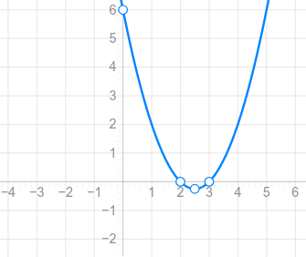

Inecuaciones de primer grado
¿Qué es una inecuación de primer grado?
Una inecuación de primer grado con una incógnita es aquella en la que la incógnita tiene exponente 1 y no aparece elevada a potencias mayores.
Su forma general es:
\( ax+b<0 \)
También puede utilizar cualquiera de los otros signos de desigualdad, y \(a\) debe ser distinto de cero.
Algunos ejemplos son:
\( 3x+2>8 \)
\( 5x-7\leq 13 \)
\( -2x+4\geq 10 \)
¿Cómo se resuelven?
Para resolver una inecuación de primer grado, seguimos un procedimiento parecido al de las ecuaciones, pero debemos recordar que, si multiplicamos o dividimos por un número negativo, cambia el sentido de la desigualdad.
Ejemplo 1. Inecuación sencilla
Resuelve:
\( 3x+5<17 \))
Paso 1. Restamos 5 en ambos miembros.
\( 3x<17-5 \)
\( 3x<12 \)
Paso 2. Dividimos entre 3.
\( x<4 \)
Solución:
\( \boxed{x<4} \)
En intervalos, la solución es \((-\infty,4)\).
Ejemplo 2. Incógnitas en ambos miembros
Resuelve:
\( 5x-3\geq 2x+9 \)
Paso 1. Restamos \(2x\) en ambos miembros.
\( 3x-3\geq 9 \)
Paso 2. Sumamos 3.
\( 3x\geq 12 \)
Paso 3. Dividimos entre 3.
\( \boxed{x\geq 4} \)
La solución es \((4,+\infty)\).
Ejemplo 3. Cuando hay que cambiar el sentido
Resuelve:
\( -4x+6<14 \)
Paso 1. Restamos 6.
\( -4x<8 \)
Paso 2. Dividimos entre \(-4\). Como dividimos por un número negativo, cambiamos el sentido del signo.
\( \boxed{x>-2} \)
La solución es \((-2,+\infty)\).
Importante: no olvides cambiar el sentido de la desigualdad en el último paso.
Inecuaciones con paréntesis y fracciones
También podemos encontrar inecuaciones que necesitan operaciones previas.
Ejemplo 4. Con paréntesis
Resuelve:
\( 2(x-3)+4\leq 3x+1 \)
Quitamos los paréntesis:
\( 2x-6+4\leq 3x+1 \)
Reducimos términos semejantes:
\( 2x-2\leq 3x+1 \)
Restamos \(2x\):
\( -2\leq x+1 \)
Restamos 1:
\( \boxed{x\geq -3} \)
Ejemplo 5. Con fracciones
Resuelve:
\( \dfrac{x-1}{2}+\dfrac{x+2}{3}>2 \)
El mínimo común múltiplo de 2 y 3 es 6. Multiplicamos todos los términos por 6, que es positivo, por lo que el signo no cambia:
\( 3(x-1)+2(x+2)>12 \)
Quitamos los paréntesis:
\( 3x-3+2x+4>12 \)
Reducimos términos semejantes:
\( 5x+1>12 \)
\( 5x>11 \)
\( \boxed{x>\frac{11}{5}} \)
Casos especiales
No todas las inecuaciones de primer grado tienen soluciones para algunos valores concretos.
Por ejemplo:
\( 2x+3<2x+1 \)
Restamos \(2x\) en ambos miembros:
\( 3<1 \)
Esta desigualdad es falsa. Por tanto, no existe ningún valor de \(x\) que sea solución.
El conjunto solución es el conjunto vacío:
\( \boxed{S=\varnothing} \)
En cambio, si obtenemos una desigualdad siempre verdadera, como:
\( 2x+3>2x-1 \)
Restamos \(2x\):
\( 3>-1 \)
Esta desigualdad es siempre verdadera. Por tanto, todos los números reales son solución:
\( \boxed{S=\mathbb{R}} \)
Inecuaciones de segundo grado
¿Qué es una inecuación de segundo grado?
Una inecuación de segundo grado es aquella en la que aparece la incógnita elevada al cuadrado.
Su forma general es:
\( ax^2+bx+c>0 \)
También puede utilizar los signos \(<\), \(\leq\) o \(\geq\), y \(a\neq 0\).
Algunos ejemplos son:
\( x^2-5x+6>0 \)
\( x^2-9\leq 0 \)
\( 2x^2+x-3\geq 0 \)
Para resolverlas, necesitamos conocer las raíces del polinomio de segundo grado y estudiar en qué intervalos la expresión es positiva o negativa.
Procedimiento para resolverlas
En este nivel, podemos seguir estos pasos:
- Escribir la inecuación con todos los términos en un mismo miembro.
- Resolver la ecuación asociada, igualando el polinomio a cero.
- Representar las raíces en la recta real.
- Estudiar el signo del polinomio en cada intervalo.
- Elegir los intervalos que cumplen la desigualdad.
- Incluir las raíces si el signo de la inecuación lo permite.
Para estudiar el signo, podemos factorizar el polinomio o utilizar su representación gráfica. La parábola permite visualizar cuándo la expresión está por encima o por debajo del eje horizontal.
Ejemplo 1. Inecuación con dos raíces
Resuelve:
\( x^2-5x+6>0 \)
Paso 1. Resolvemos la ecuación asociada:
\( x^2-5x+6=0 \)
Factorizamos:
\( (x-2)(x-3)=0 \)
Por tanto, las raíces son:
\( x=2,\qquad x=3 \)
Paso 2. Estudiamos el signo.
Las raíces dividen la recta real en tres intervalos:
\( (-\infty,2),\quad (2,3),\quad (3,+\infty) \)
El polinomio es positivo fuera de las raíces y negativo entre ellas.
Signo de \(x^2-5x+6\)
| Intervalo | Signo |
| \((-\infty,2)\) | Positivo (+) |
| \((2,3)\) | Negativo (−) |
| \((3,+\infty)\) | Positivo (+) |
Paso 3. Como queremos que el polinomio sea mayor que cero, seleccionamos los intervalos positivos.
\( \boxed{x\in(-\infty,2)\cup(3,+\infty)} \)
Las raíces 2 y 3 no se incluyen porque la desigualdad es estricta.
Ejemplo 2. Inecuación con raíces incluidas
Resuelve:
\( x^2-9\leq 0 \)
Paso 1. Factorizamos:
\( (x-3)(x+3)\leq 0 \)
Las raíces son \(x=-3\) y \(x=3\).
Paso 2. Estudiamos el signo. El producto es negativo entre las dos raíces y vale cero en ellas.
Paso 3. Seleccionamos los valores para los que la expresión es menor o igual que cero.
\( \boxed{x\in(-3,3)} \)
En este caso, los extremos se incluyen porque el signo \(\leq\) admite la igualdad.
Ejemplo 3. Cuando el coeficiente principal es negativo
Resuelve:
\( -x^2+4x-3>0 \)
Multiplicamos por \(-1\) y cambiamos el sentido de la desigualdad:
\( x^2-4x+3<0 \)
Factorizamos:
\( (x-1)(x-3)<0 \)
Las raíces son 1 y 3. Como el polinomio \(x^2-4x+3\) tiene coeficiente principal positivo, es negativo entre las raíces.
Por tanto:
\( \boxed{x\in(1,3)} \)
Relación con la gráfica de una parábola
Una función cuadrática tiene una gráfica con forma de parábola. Para interpretar una inecuación, nos interesa saber dónde la parábola está por encima o por debajo del eje \(X\).
Veamos \( x^2-5x+6>0 \)

En el ejemplo \(x^2-5x+6>0\), buscamos los valores de \(x\) para los que la gráfica está por encima del eje horizontal. Esto sucede a la izquierda de 2 y a la derecha de 3.
No es necesario representar gráficamente todas las inecuaciones si podemos factorizar y estudiar los signos, pero la gráfica ayuda a comprender por qué la solución está formada por uno o varios intervalos.
¿Qué ocurre si el polinomio no se puede factorizar fácilmente?
Podemos utilizar la fórmula de segundo grado para resolver la ecuación asociada:
\( ax^2+bx+c=0 \)
Sus soluciones, cuando existen, se calculan mediante:
\( x=\dfrac{-b\pm\sqrt{b^2-4ac}}{2a} \)
La expresión \(b^2-4ac\) se llama discriminante.
- Si es positivo, hay dos raíces reales distintas.
- Si es cero, hay una raíz real doble.
- Si es negativo, no hay raíces reales.
Después de calcular las raíces, estudiamos el signo del polinomio para encontrar la solución de la inecuación.
Por ejemplo:
\( x^2-2x-1<0 \)
Resolvemos la ecuación asociada:
\( x^2-2x-1=0 \)
Aplicando la fórmula, obtenemos:
\( x=1-\sqrt{2},\qquad x=1+\sqrt{2} \)
Como el coeficiente de \(x^2\) es positivo, el polinomio es negativo entre las dos raíces.
Por tanto, la solución es:
\( \boxed{x\in(1-\sqrt{2},1+\sqrt{2})} \)